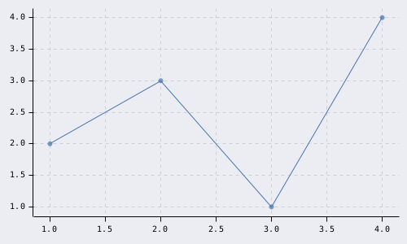
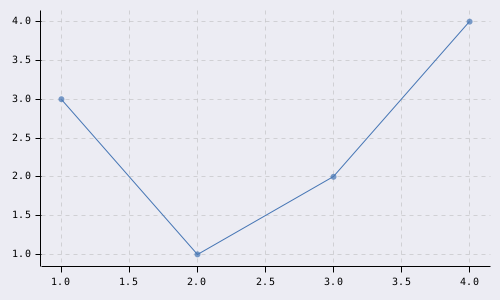
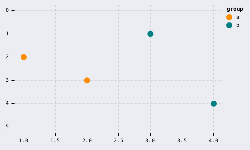
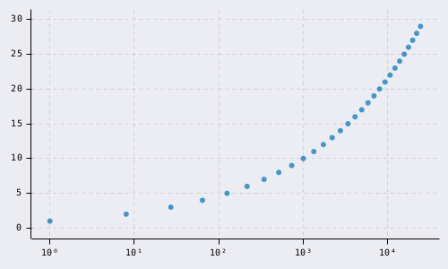
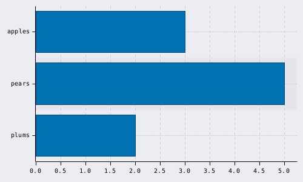
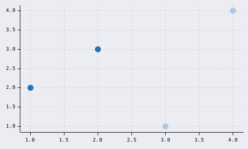
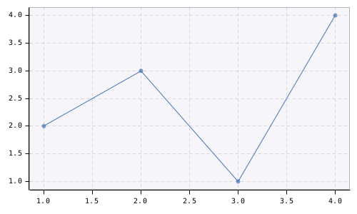
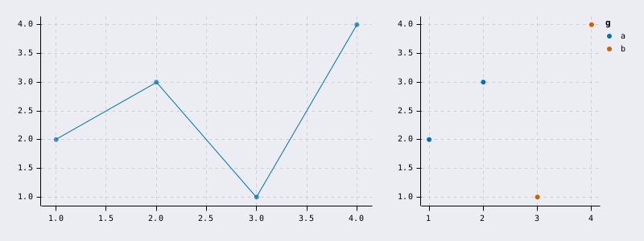
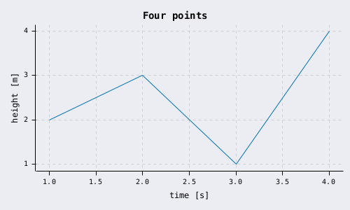
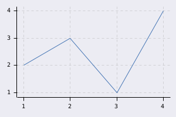

1 Overview
The reference lists every option of cljplot2: the plot map, render options, scales, facets, labels, the theme, every chart, builder and user-facing data function. The option cards are generated from the library’s validating schemas, so they name exactly what plot/build accepts. Use cases and galleries show the options at work; these four parts say what exists.
(ns reference.intro
(:require [cljplot2.chart :as chart]
[cljplot2.core :as plot]
[cljplot2.describe :as describe]
[cljplot2.pipeline :as pipeline]
[notebook-utils :as nu]))The table below holds four made-up points in two groups; most plots of A plot is a map draw them:
(def points [{:x 1 :y 2 :g "a"} {:x 2 :y 3 :g "a"} {:x 3 :y 1 :g "b"} {:x 4 :y 4 :g "b"}])| x | y | g |
|---|---|---|
| 1 | 2 | a |
| 2 | 3 | a |
| 3 | 1 | b |
| 4 | 4 | b |
1.1 How the reference is organised
Concepts (this chapter and the next twelve) - rendering, data and mapping, types, aesthetics and legends, scales and coordinates, layering, labels and text, facets and multiplots, the theme, the shared option groups, errors and what the library doesn’t do.
Charts - the options of each chart kind, grouped by what they show: points, lines and areas, annotations, bars, distribution per level, distribution of one variable, fitted and function curves, 2D bins and fields, pairwise statistics, shares and sets, multivariate and 3D.
Builders (from Graphs) - the functions turning rows into whole plots: networks, trees, series.
Data functions (from Levels) - the user-facing functions preparing rows, and internal namespaces shown by example.
1.2 How to read a card
Each group of cards holds related options and comes before an example that uses them - a plot or a value.
Header - the option’s key and its default. A nested key shows its path inside the group’s map (
:scales :x),(theme)marks a default the theme holds, and a computed default is described in words. Keys without a default (required keys, and maps whose own keys follow) show none.Example - for most options, a call that sets the option, or a plot map for plot keys (
{:scales {:x {:kind :log}}}).Text - what the option does, then a point per value or form with its meaning. An option of one form shows only its type, and a long list ends with its other values on one line.
A chart’s, builder’s or data function’s section lists the shared groups of options it takes in a box linking to the Shared options chapter, its mapping keys in a Mapping box and its positional arguments in an Arguments box.
1.3 A plot is a map
plot/render-image takes a plot map and render options and returns a java.awt.image.BufferedImage. The plot keys come in groups; each has its chapter.
1.3.1 Content
These keys hold the rows, how their values map to dimensions, and the charts drawing them (Data and mapping):
The plot below draws the points as a line with points:
(plot/render-image {:data points
:mapping {:x :x :y :y}
:charts [(chart/line) (chart/scatter)]}
{:width 500 :height 300})
The same rows under another mapping - :x and :y swapped - give another plot:
(plot/render-image {:data points
:mapping {:x :y :y :x}
:charts [(chart/line) (chart/scatter)]}
{:width 500 :height 300})
1.3.2 Scales
This key turns data values into positions, colours, shapes …:
The plot below fixes and reverses the y domain and names the colours and their legend:
(plot/render-image {:data points
:mapping {:x :x :y :y :color :g}
:charts [(chart/scatter {:size 12})]
:scales {:y {:domain [0 5] :reverse true}
:color {:range [:darkorange :teal] :title "group"}}}
{:width 500 :height 300})
The :scales map takes a spec per dimension (Scales, axes and coordinates, Facets, multiplots and margins, Aesthetics and legends):
The plot below spreads the small values with a logarithmic x scale:
(plot/render-image {:data (for [i (range 1 30)] {:x (* i i i) :y i})
:mapping {:x :x :y :y}
:charts [(chart/scatter)]
:scales {:x {:kind :log :formatter :power}}}
{:width 500 :height 300})
1.3.3 Coordinates
These keys set the coordinates: cartesian, flipped or with equal units, or polar (Scales, axes and coordinates):
The plot below flips the bars horizontal, their order reversed:
(plot/render-image {:data [{:fruit "apples" :n 3} {:fruit "pears" :n 5} {:fruit "plums" :n 2}]
:mapping {:x :fruit :y :n}
:charts [(chart/bar)]
:scales {:x {:reverse true}}
:flip true}
{:width 500 :height 300})
The same bars in polar coordinates - a rose (bars filling their band, :width 1.0, Strip options):
(plot/render-image {:data [{:fruit "apples" :n 3} {:fruit "pears" :n 5} {:fruit "plums" :n 2}]
:mapping {:x :fruit :y :n :color :fruit}
:charts [(chart/bar {:width 1.0})]
:coord {:kind :polar}
:legend false}
{:width 350 :height 350})
1.3.4 Layout
These keys split the panel by data, put several plots in a grid or charts beside the panel (Facets, multiplots and margins):
The plot below splits the points into a panel per group:
(plot/render-image {:data points
:mapping {:x :x :y :y :facet :g}
:charts [(chart/line) (chart/scatter)]}
{:width 500 :height 300})
The plot below puts two plots in one image with plot/arrange, in two columns weighted 3 : 2:
(plot/render-image (plot/arrange [{:data points :mapping {:x :x :y :y} :charts [(chart/line) (chart/scatter)]}
{:data points :mapping {:x :x :y :y :color :g} :charts [(chart/scatter)]}]
{:columns 2 :widths [3 2]})
{:width 800 :height 300})
1.3.5 Titles
This key holds the titles (Labels and text):
The plot below names the plot and both axes:
(plot/render-image {:data points
:mapping {:x :x :y :y}
:charts [(chart/line)]
:labels {:title "Four points" :x "time [s]" :y "height [m]"}}
{:width 500 :height 300})
1.3.6 Legend
Mapped aesthetics draw legends; these keys hide them or draw only them (Aesthetics and legends):
The plot below hides the legend of its colours:
(plot/render-image {:data points
:mapping {:x :x :y :y :color :g}
:charts [(chart/scatter {:size 12})]
:legend false}
{:width 500 :height 300})
1.3.7 Style
The theme holds every style default; these keys override parts of it for one plot (Theme):
The plot below gives the plot a white background and the panel a light fill and a border:
(plot/render-image {:data points
:mapping {:x :x :y :y}
:charts [(chart/line) (chart/scatter)]
:theme {:plot {:background :white}
:panel {:fill [245 245 250] :border-color [180 180 180]}}}
{:width 500 :height 300})
1.3.8 Render options
This key lets a plot carry its render options (Render):
The plot below carries its own size, so render-image takes no options:
(plot/render-image {:data points
:mapping {:x :x :y :y}
:charts [(chart/line)]
:options {:width 300 :height 200}})
1.4 The pipeline
plot/build validates the plot first and throws an error listing the problems (Errors). Then the plot passes through pure stages, each adding one key: :split (rows split per facet panel and group) → :stats (each chart’s computed data) → :extents → :scale-specs → :grid → :layout → :finalized-scales → :subplots. plot/render draws the result.
1.5 The cards as data
The cards come from cljplot2.describe, which you can use at the REPL too:
describe/optionsreturns the rows of a chart value, a builder or data function var, or a schema;describe/mappingreturns the mapping keys a chart reads,describe/theme-rowsthe theme’s rows anddescribe/fragment-rowsa shared group’s;describe/api-varslists the user-facing data functions,describe/chart-constructorsthe charts anddescribe/attribute-valuesthe built-in shapes, dashes, patterns and cells.
A row is a plain map; :section names its slice of the options:
(first (describe/options pipeline/plot-schema)){:description
"The rows or columns the charts read; a chart's own `:data` wins over it.",
:path [:data],
:key :data,
:fragment nil,
:default nil,
:section :content,
:type
"a sequence of rows (maps) or a map of columns (sequences) or nil",
:default-doc "None: each chart brings its own `:data`.",
:values [],
:example [{:x 1, :y 2} {:x 2, :y 3} {:x 3, :y 1}],
:other-values nil,
:required false,
:forms [{:form :cljplot2.data.rows/data, :type "data", :meaning nil}]}source: notebooks/reference/intro.clj